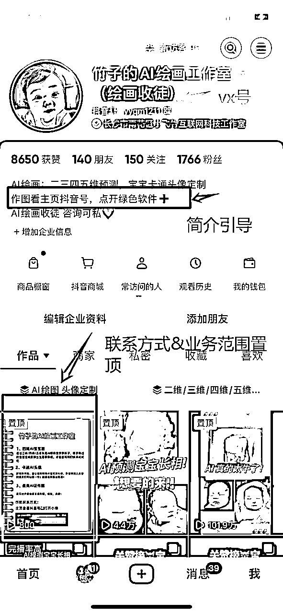
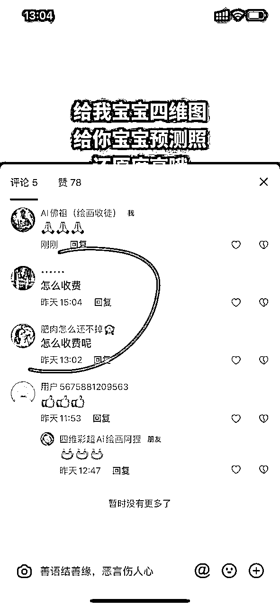

来源：https://pa7l8baqg83.feishu.cn/docx/LPixdNhf4ofAcgx52PGcfbaYnTc
竹哥 @竹子。在生财风向标挖宝，并在抖音实操发布了第一条视频，当天视频爆了，截图发在咱们微信群。
当时我已经跟着生财各种航海手册（AI绘画、抖音SEO等）摸索着做抖音有一个多月，看到竹哥的视频数据异常，「数据异常必有妖」立马去复刻，我的第一个视频也爆了。
接着就喊群里小伙伴都下场干（抖音一身份证一机一号，比较严格，适合做多人矩阵），有些小伙伴没有接触过网赚项目，不知道该怎么下手，于是就诞生了此帖：从0到1跑通项目的SOP。
团队成员写了两篇精华帖：
最近又去调研了抖音该领域账号以及变现方式，以下账号均是近期还在更新的账号，四维宝宝赛道还可做，想下场玩一玩的小伙伴可以实操下：
价格29.9元，付费广告投放。
用户在抖音小程序下载ai绘画图片
方式1：需要点击看广告免费取图，我们拿广告提成；
方式2：付费会员，我们拿会员提成。
大概每个付费会员我们拿提成几块钱，小程序平台不同，费用会有略微差别。
只要抖音生态还在，这套逻辑依然不过时，这也是我把项目手册分享出来的原因之一；前段时间帮朋友搭建她的房产抖音自媒体账号和私域承接号，本文档就刚好用上。
非常感谢生财有术，里面有无数宝藏项目，亦仁说每个项目都至少价值百万（亦仁：啊？我说过这？勿Q）
亦仁在小灯塔里面说：真正的好项目，都是从项目“面包屑”开始；我的小伙伴 @竹子。就是这个挖宝人，感谢竹哥带我们开启一条生意门路，这才有了这篇帖子的诞生。
亦仁小灯塔原帖：https://t.zsxq.com/2Zxap
感谢我的好姐妹们一起共建了整个项目，把抖音矩阵号做起来，一度成为AI绘画四维宝宝抖音TOP 1矩阵，回忆起来依然很美好。
一直觉得带着姐妹们只赚到了点小钱，是我没有做好破局，让大家赚更多；这也是我想写这篇帖子原因之一：想被看见，被指点，希望下一个项目能做更好（亦仁：又要Q我了？）。
今天带着这个问题又去逛了生财，看到亦仁小灯塔的帖子，忽然有些释怀了，去寻找更广阔的天地，去寻找天花板更高的项目，去下场干，去分享去链接，多多被看见，我们的机会就会更多。
希望亦仁小灯塔多分享，爱看，对创业者真的挺有帮助，哈哈哈，看到亦仁也有烦恼，我们的烦恼可不是就减少一半🐶；就像亦仁分享自己看名人传，看到他们也是这样，我这就不是事了。
YouTube shorts项目实战中，生财YouTube航海教练，带小伙伴入局shorts，出了两篇精华帖：
https://t.zsxq.com/XAqiu
https://t.zsxq.com/BOfdn
接下来全力入局YouTube做内容出海🚢，感谢生财的超级标，也感谢这次YouTube航海的教练们，特别是 老马教练的指导和分享，有你们真好，一起远航，一起卷海外。
模仿内容如下（包含但不限于）：
视频风格、视频文案、视频音乐、视频评论区和用户的回复以及评论区维护等

请大家务必提前3-7天开始打造朋友圈人设，具体方法点开文档查看，因为只有专业才会被用户信任，会向我们付费，换位思考下，如果你是用户，你怎么选择？
https://learningprompt.wiki/zh-Hans/docs/midjourney/mj-tutorial-basics/how-to-use-midjourney
先看上面👆帖子，先看上面👆帖子，先看上面👆帖子，然后再看下面的视频讲解如何用四维彩超照片生成宝宝图片。
第一次使用常遇到的问题
1、发送彩超到discord，复制粘贴彩超以后，需要按enter键发送；和微信中发送图片一样。
2、使用网页版discord，复制彩超图片链接，需要点开图片，再复制媒体链接（非消息链接）。
（点开文档右上角点击，可以用中文查看）
https://learningprompt.wiki/zh-Hans/docs/midjourney/mj-tutorial-basics/how-to-use-midjourney
确保是 version5.1模式即可，其他设置不影响画画风格，只影响速度。
最近新出了version5.2模式，彩超比较模糊可以用它制作，两个模式来回切换一下，就目前我的使用，5.2偏可爱风格一些，有些假，5.1写实一些，有些太丑就用5.2跑。（更新时间2023年7月）
注意截图中的设置选项，请保持一致。
买入新账号可以看看30美刀的资源是否保持在90%以上。
以下fast time remaining:快速出图模式已被使用光，0%。
快速模式被用掉，就只剩Relaxed usage：慢速出图模式
1、谷歌浏览器搜索🔍四维彩超，选择图片模式，全都是素材啊，朋友们，用起来，可以当作实操练手。
2、抖音、小红书、视频号搜索🔍四维彩超相关词条。
super cute Chinese newborn baby, wrapped in a white blanket, frontal view,falls asleep in peacefully, blemish, porcelain, face, tall nose, thin and pink lips, serene, expressive facial, --ar 1:1
可以直接用微信编辑图片，用马赛克把脸之外的区域打一圈码，生成图片中的奇怪的东西就没了，对于垫图跑不出满意的图的时候可以用。
：用微信自带的图片编辑，用画笔（调成黑色），把孩子的五官轮廓描一下，这样出图更加像
keep the consistency of action, expression, clothing, shape and appearance of the photos, cute Chinese baby boy, small eyes,wear red mcdonalds hat, sitting on the floor, french fries and hamburger dolls on the floor, Paint 3D effect on this basis, art,3D character from Disney Pixar Animation, c4d,best quality,8k
注意：描述咒语需要根据客户提供的图片进行个性化修改，比如宝宝戴什么颜色的帽子，什么形状，什么动作，周围环境有什么等，不会英语可以用翻译软件辅助，上面的咒语蓝色这一段是根据客户照片加的描述：
可爱的中国男孩，戴红色麦当劳帽子，坐在地上，地上有薯条和汉堡娃娃）
Cute black short-haired girl with a white veil, girl facing the camera, shy, smiling , happy, front view, cute boy wearing white shirt kissing the girl's left face, full of love, IP by popmart, Pixar style, disney style, red clean background, 3D rendering, C4D, studio lighting, 8k --s 600 --ar 4:3 --iw 1.1
婚纱照咒语：Pop art, 3D rendering, clay material, girl's head resting on boy's shoulder, oval face attractive brunette girl in wedding dress with pearl earrings, round face handsome boy in brown checkered suit with black tie, they are both audience smiling,clean red background, blender, c4d, octane render, super detailed,high quality,--ar 4:3
视频剪辑软件，简单学习，目的是模仿爆款视频的时候使用。手机和电脑都可，手机操作也简单，电脑端不要用微信传输视频，会降低画质，可以选择飞书传输。
学习视频：
学习视频：
面部重塑-嘴巴-M唇 鼻子-高鼻梁微调等功能
（在人像美容隔壁的功能键）
底图跑不出满意的图的时候可以，可以直接用微信编辑图片/美图秀秀马赛克把脸之外打一圈码，MJ出图一些脸部或者周围奇奇怪怪的东西就没了~算是一个解决办法 。
抖音账号发布的视频必须每条浏览都在300-500之间才算正常新号，如果没有请多发点日常，拍拍风景找爆款视频模仿，放上音乐，加上文案描述，多看看抖音推荐页，也就是每天看看手机抖音关注博主、找灵感、像个真人一样使用抖音。
注意：最近抖音审核比较严格，尽量少发【接男宝】这类带性别的视频，很容易被误伤。
尽量选择大家刷手机的时间，早上八点，中午十二点，晚上八点左右发布。
模仿或者搬运我们群抖音高点赞评论数据的视频，懂感恩，给人点赞评论。
或者自己抖音搜索找对标账号模仿（不是咱们群的账号只能模仿，千万别搬运视频，会被投诉）
别人问收费吗？发彩照照片，我们要出来营业，回复是做给客户们看的，你的评论区会有很多客户看，如果不回复，别人觉得这个账号没人搭理，就走了。
例如：给我一张彩超照片，我就能让你见到宝贝（消息太多，单独发我哈）[送心]
目的是引导，成交客户（置顶评论审核标准不一样，可以多试几种，自己账号能用哪种就用哪种，只要是引导用户找你就行）

开单？多模仿开单的账号，多模仿开单的账号，多模仿开单的账号
这个项目没有什么技巧，前期全靠执行力强，肯干肯模仿或者搬运，没出单的人少原创，自己搞要么你很厉害，要么一直不出单。
违禁词查询网站：https://www.check51.com/
违禁词查询网站：https://www.jinyongci.com/
咱们AI绘画项目，容易擦边【性别鉴定】这类违法和违反医学规定的事情，于是我们用词尽量要小心，刚开始千万别原创一个词，发布就被禁言或者封号。。。尽量先按照咱们账号来模仿。
曾经被抖音误伤的账号截图（AI佛祖），尽量别被性别鉴定擦边了，日入千元，直接降级哈哈哈哈。
万一被禁言之类，请看手册提交申诉：
按照以下截图内容操作下，查看自己的账号是否异常，有异常及时解决。
尽量别被性别鉴定擦边了，万一被禁言或者视频异常之类，请看手册提交申诉：
点击手机端抖音，我》右上角三个横杠》更多功能》社区评审团》规则中心》规则解读》查看更多，学习抖音规则视频，每个1-3分钟，简单。
违规：低俗、炫富、内容质量差、危险行为（死亡，重伤）、引人不适等等，具体可看官方小视频。
目的：将同类型的视频放入一个文件夹，提高抖音对我们账号的权重，能获得抖音更多的青睐。
建立抖音视频合集（浏览器收藏本链接）：https://creator.douyin.com
Al特效太厉害啦!通过四维彩超就可以生成AI特效宝宝，孕妈宝爸看过来，没有哪个期待与宝贝见面的爸爸妈妈们能拒绝吧?四维彩超ai特效，四维ai照片生成，四维照片变动漫，宝宝四维ai预测照入口，四维、四维彩超、三维、三维彩超、二维、二维彩照、五维、五维彩超、彩超、3维、4维彩超、四维检查。
目的：优化关键词（seo）,让抖音搜索用户搜索某些关键词的时候能够第一时间找到我们的账号或者视频合集。
这也是我们为什么要做合集的原因，就是提高用户找到我们的概率，提高抖音对我们账号的权重。
数据分析网站（关键词优化网站）：https://dyinseo.com/KeywordDouyin/index.html
演示如何使用：
关键词顺序不可更改，更改以后就是不同的关键词：例如 四维彩超ai特效 和 ai特效四维彩超 就不同。
粉丝达到550、1000、3000、5000，每个阶段都是一个flag⛳️（里程碑），目前咱们开企业号即可。
闲鱼/淘宝，买粉丝涨粉（120-150元买1000粉丝左右）但都是老年粉丝，这样来的粉丝只能提升抖音对您账号的权重，基本不能依靠这些粉丝变现。下面的方式适合长期搞钱，可以先买粉120快钱的起号，再养号自己投流或者慢慢运营涨粉。
要咨询清楚会不会掉粉严重，自己多上心哈。
抖音平台（收藏链接）：https://creator.douyin.com
查看每个作品的数据分析，选择完播率好、跳出率低的视频的视频投放，一次可多投放三四个视频，看哪个视频效果好，消耗到30快钱看一下投放质量怎么样，如果投放质量不行，就停止投放；停止投放是将视频设置为仅自己可见，投放就停止了。
每个粉丝1-2元左右是正常的，我的是0.2元一个粉丝，诀窍就是模仿别人的爆款视频，视频质量好自然投放效果好）
手机上看视频数据分析情况：
选择完播率好、跳出率低的视频的视频投放，前提条件一定是视频优质，再投放，土豪随意。
选择这些指标好的视频前3名，投放100块（3个视频一起投放100块即可）。
注册个体户成本低；注册公司成本高。方便开店：淘宝，抖音，闲鱼等店铺。
线下去市场监督管理局营业执照窗口办；线上市场监督管理局网上办，不需要钱，普通营业执照简单，当天受理，有些当天下证，只需要带好身份证。经营范围看底下，个体户名字自己提前想个好记的或者怎样的都行。
（自己办其实还好 资料交的没问题办起来很快，打电话问所在街道的市场监督管理所，直接问办个体工商户仅网络经营所要哪些资料，哪个网站提交，按他们说的搞就行）
79块钱搞定海南个体户，自己拼多多找商家办理。遇到困难群里说。
经营范围可以和下面弄一样的，电商全品类，直接发给代办，问清楚代办全包价格是不是79元，有没有隐形或者其他费用，成年人需要自己为自己的事情负全部责任，多上心，不是所有人做生意和咱们一样，公开价格没有隐形消费。
拼多多一些店铺标价79元，但有隐形消费，卖食品要许可证300块，让店家去掉食品经营类目或者换一个店铺；因为我们办的证压根就不需要食品许可证，截图就是我办的证。以下店铺避坑，有隐形消费300元。
有个体户或者公司营业执照就能开，如何办理营业执照看上面👆。
抖音手机端：我-右上角三杠-设置-账号与安全-申请官方认证-企业认证-选择个体户或者公司认证。
需要营业执照、法人身份证正反面照片、运营人员手机号码（需要接收验证码）
企业号底下可以绑定多个抖音账号同时运营，也就是主号+小号一起运营，用同一个营业执照；一个营业执照可以认证三个抖音号。
不建议刚开始就矩阵，先把一个号做起来，再开始跑第二个号。爸妈账号可以一起拿来用（一身份证一机一号）
https://leads.cluerich.com
截图为刚开通企业号，还没开始经营，无法开通后台私信自动回复功能，需要经营2-3天：每天回复抖音后台咨询消息，没人咨询就用小号，自己咨询自己，2-3天即可。
开通企业号以后，涨粉到550，如何涨粉看第五点，有两个方法，让波妮看下账号情况，然后再认证蓝V，因为认证以后再修改名字、个人简介很麻烦。
抖音企业认证手机端：
我-右上角三杠-设置-账号与安全-申请官方认证-企业认证-选择个体户或者公司认证。
我-企业服务中心-点亮蓝V-点进去就是认证（目前蓝V认证免费，冲鸭）
电脑端登录链接：https://leads.cluerich.com
此功能企业号才能开，注册个体户营业执照看第六点
提交企业认证后，需要等待官方1-3天审核，保持电话畅通。
以下两个条件不满足，需要完成：
1、配置商家模块：看第八点第一条
2、买粉丝：看第五点第二条
以下几个功能可以尝试新建，备用。
1、主页装修
2、会话管理
3、私域经营
参见抖音账号：aifozu
抖音商家网站链接：https://leads.cluerich.com
企业号自动回复设置：
把自己当用户去咱们账号体验，授权各位照搬，不会的时候原创就是罪（触犯敏感词），先用起来再优化。
点击视频小卡片跳转到私信：
账号不满足以下截图条件，需要自己后台维护，每天自己小号找大号聊天，再用家人抖音找自己大号聊天，充当客人做咨询，记得一小时以内回复，持续2天即可。
满足以上👆条件即可开通私域咨询：
xxx/位，包AI绘画四维彩超，拉项目群（群公告有项目文档，开文档权限）。
快团团等团购母婴产品销售